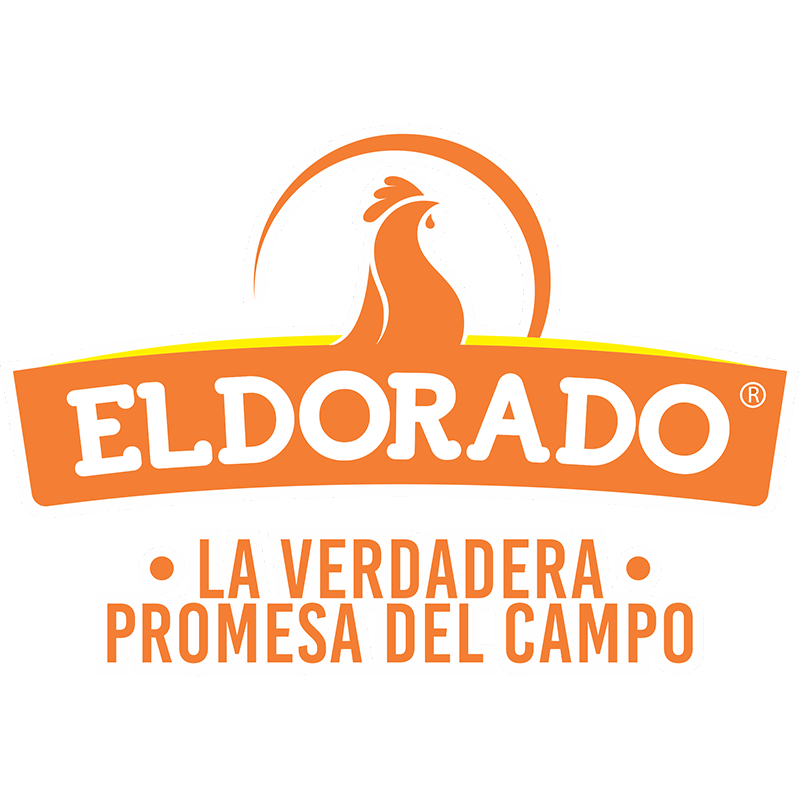
La verdadera promesa del campo
Cómo Pollos Eldorado ha construido una ventaja competitiva desde la confianza, la calidad y la sostenibilidad
Este micrositio analiza cómo una empresa regional ha construido valor desde su operación, sus certificaciones, sus clientes y su cultura organizacional.
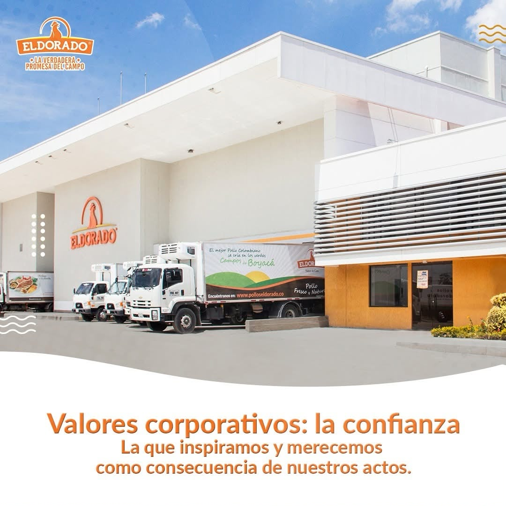
¿Por qué Pollos Eldorado?
Porque representa un caso real donde la propuesta de valor se ha construido desde decisiones estratégicas, no solo desde la comunicación.
Seleccioné Pollos Eldorado porque conozco su operación y considero que es un caso especialmente valioso para estudiar desde el marketing estratégico. La empresa ha consolidado atributos diferenciales asociados con calidad, inocuidad, sostenibilidad, bienestar animal y cercanía con sus clientes. Sin embargo, el análisis permite identificar una oportunidad: lograr que el mercado perciba con mayor claridad el valor que la organización ya ha construido.
Conociendo la organización
Inversiones Eldorado S.A.S., bajo su marca Pollos Eldorado, es una empresa boyacense con más de cuatro décadas de trayectoria.
La propuesta de valor: “La verdadera promesa del campo”
Desde Osterwalder et al. (2014), la propuesta de valor explica qué beneficios recibe el cliente y por qué debería elegir una marca frente a otras alternativas.
Confianza, calidad y origen
En Pollos Eldorado, la promesa de marca no se limita a una frase publicitaria. Se materializa en productos avícolas que transmiten frescura, sabor, inocuidad y respaldo. Su valor no está únicamente en vender una proteína de consumo masivo, sino en ofrecer una experiencia de confianza para hogares, negocios gastronómicos y clientes institucionales que requieren calidad constante.
La transformación estratégica
La ventaja competitiva no nació de una campaña; fue el resultado de decisiones sostenidas en el tiempo.
Desde el marketing estratégico, estas certificaciones y prácticas no deben leerse como sellos aislados, sino como capacidades organizacionales que reducen la incertidumbre del cliente, fortalecen la confianza y diferencian a la empresa en una categoría sensible al precio.
Granjas Avícolas Bioseguras
La calidad comienza en el origen. La bioseguridad protege la cadena productiva y reduce riesgos sanitarios que podrían afectar la inocuidad y la consistencia del producto.
Valor para el cliente: confianza desde el origen.Certificación Halal
La certificación Halal evidencia la capacidad de cumplir protocolos específicos de producción, ampliando la competitividad y el acceso a consumidores y mercados especializados.
Valor para el cliente: confianza y apertura a nuevos mercados.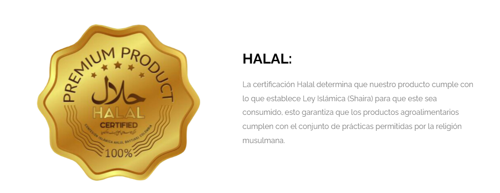
Certificación HACCP
El sistema HACCP fortalece la prevención de riesgos físicos, químicos y biológicos en la cadena de suministro, convirtiendo la inocuidad en un proceso controlado.
Valor para el cliente: alimentos más seguros.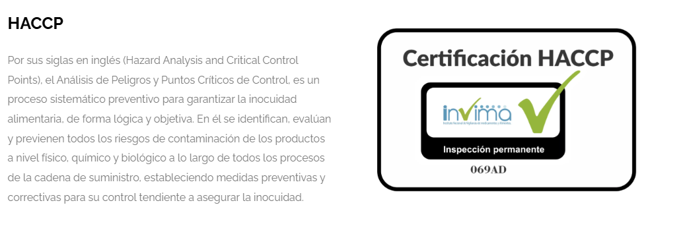
Criado sin Antibióticos Promotores de Crecimiento
La eliminación de antibióticos promotores y su reemplazo por alternativas naturales representa una decisión alineada con consumidores más informados y exigentes.
Valor para el cliente: mayor tranquilidad y confianza.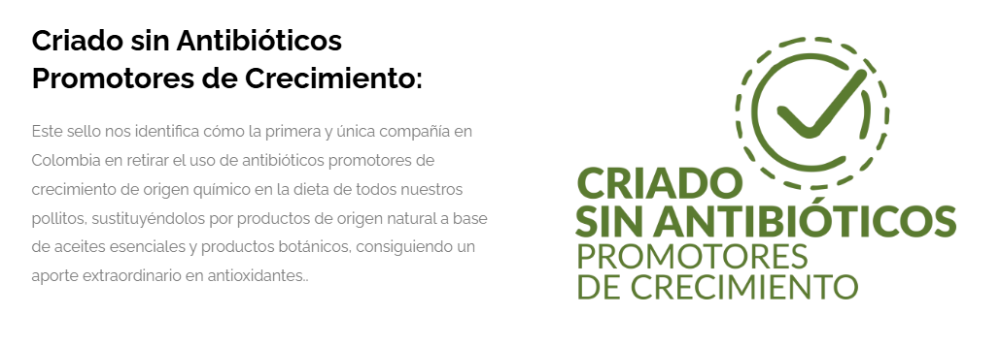
Bienestar Animal – NSF
El bienestar animal se convierte en una señal de responsabilidad y calidad. Valida prácticas de manejo, transporte y sacrificio bajo estándares especializados.
Valor para el cliente: producción responsable.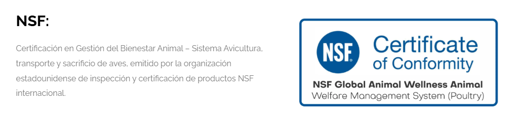
Sello Avícola de Sostenibilidad – Diamante
Este sello integra bienestar animal, bioseguridad, economía circular, uso eficiente de recursos, comunidad y bienestar laboral. La sostenibilidad deja de ser discurso y se vuelve evidencia.
Valor para el cliente: una marca comprometida con el futuro.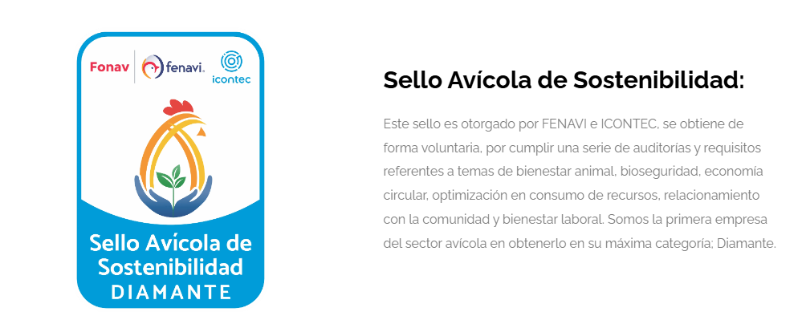
Certificación SQF
La certificación SQF consolida la transformación al respaldar la inocuidad y calidad bajo un estándar internacional, especialmente relevante para clientes institucionales y mercados exigentes.
Valor para el cliente: confianza con estándar internacional.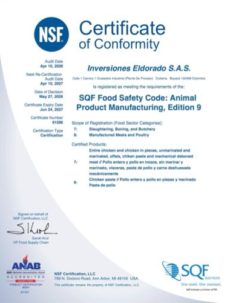
La confianza como ventaja competitiva
La confianza es un activo intangible que se construye con evidencia: procesos, certificaciones, producto, cultura y comunidad.
Confianza
La que inspiramos y merecemos como consecuencia de nuestros actos.
La propuesta de valor vista desde el cliente
El valor cambia según el segmento: hogares, restaurantes, canal institucional y clientes B2B no compran exactamente lo mismo, aunque todos compren pollo.
Buscan frescura, sabor, confianza e inocuidad para alimentar a su familia.
Valoran rendimiento, baja merma, sabor constante y disponibilidad.
Requieren gramajes, cumplimiento, calidad uniforme y respaldo sanitario.
Necesitan rotación, presentación, frescura y una marca confiable.
¿Qué hace realmente diferente a Pollos Eldorado?
Su diferenciación no depende de un solo atributo, sino de la combinación de calidad, sabor, inocuidad, sostenibilidad, cobertura y cercanía.
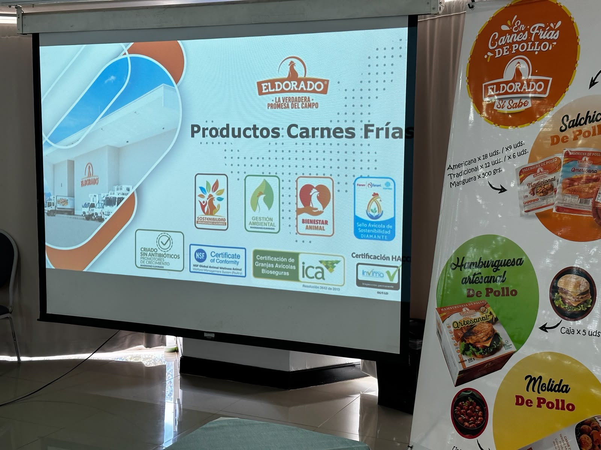
Evaluación de la ventaja competitiva
Desde Porter, competir estratégicamente implica construir una posición diferenciada que no dependa únicamente del precio.
Lo visible para el mercado
- Precio.
- Frescura.
- Sabor.
- Disponibilidad en canales.
- Producto de consumo diario.
Lo que sostiene la ventaja
- SQF, HACCP, Halal, NSF y Sello Diamante.
- Granjas bioseguras e inocuidad controlada.
- Producción sin promotores antibióticos de crecimiento.
- Relaciones institucionales y capacidad de cumplimiento.
- Cultura organizacional y compromiso con la comunidad.
Marketing 3.0 y Marketing 5.0 en acción
La marca también genera valor cuando conecta producto, personas, comunidad, experiencia y tecnología.
Desde Kotler, Kartajaya y Setiawan, el marketing evoluciona cuando las empresas dejan de enfocarse solo en vender productos y empiezan a construir relaciones significativas con sus grupos de interés. En Pollos Eldorado, esto se observa en acciones con comunidades, colaboradores, eventos, formación comercial, activaciones e iniciativas digitales.
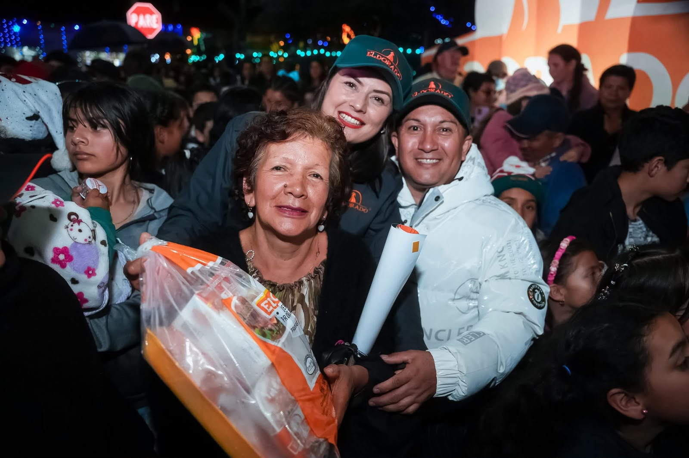
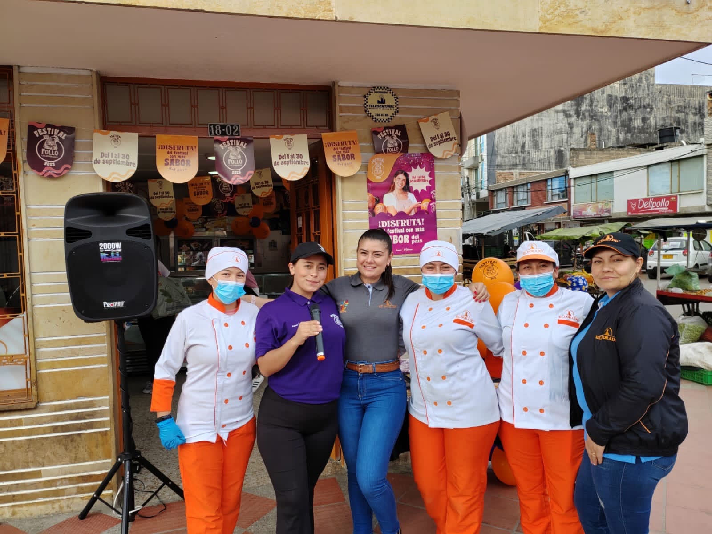
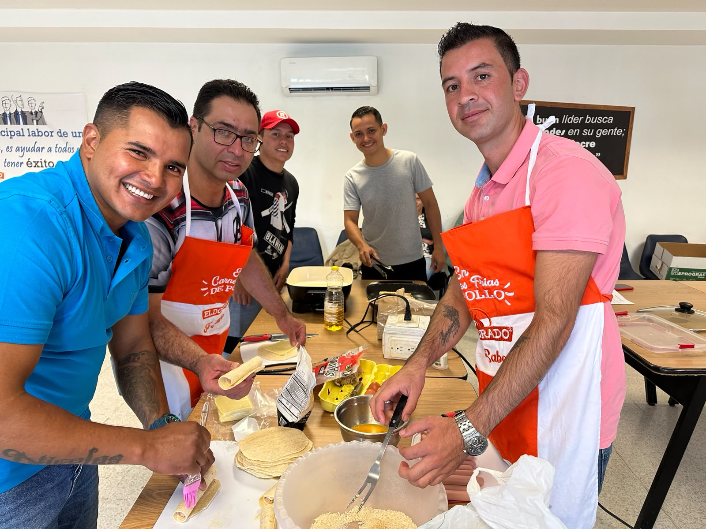
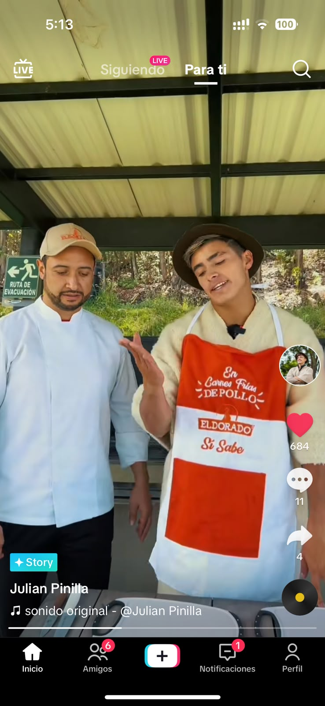
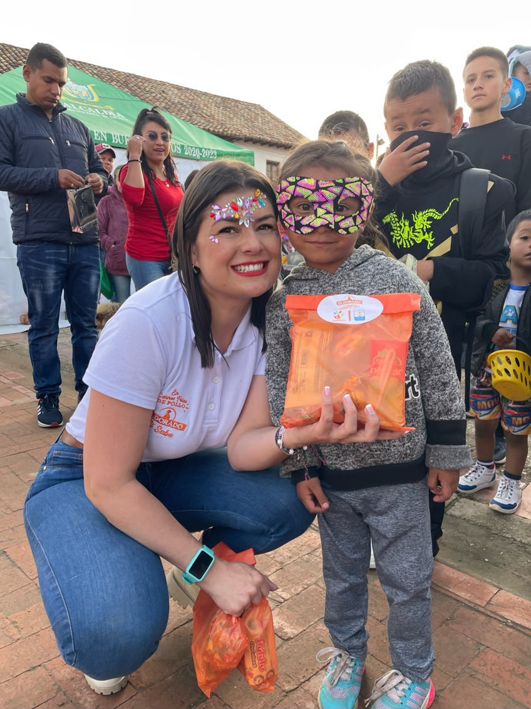
La oportunidad estratégica
El reto no está en crear nuevos diferenciales, sino en traducir los existentes en valor percibido por el mercado.
Desde una perspectiva crítica, Pollos Eldorado posee una base estratégica robusta, pero enfrenta el desafío de comunicar mejor esos atributos. Cuando el consumidor no percibe el valor diferencial, la marca corre el riesgo de competir en las mismas reglas del precio, aun cuando cuenta con capacidades superiores.
Metodología y referencias
El análisis integra bibliografía del módulo, información institucional, archivo visual propio y apoyo de IA declarado con transparencia.
Este estudio se elaboró mediante revisión bibliográfica del módulo, análisis de información institucional publicada por Pollos Eldorado, revisión de material corporativo sobre certificaciones y uso de fotografías del archivo personal de la autora. ChatGPT se utilizó como herramienta de apoyo durante el desarrollo del proyecto; el análisis crítico, la interpretación de la información y las conclusiones corresponden exclusivamente a la autora.
Chernev, A. (2019). Strategic marketing management (9th ed.). Cerebellum Press.
Chaffey, D., & Ellis-Chadwick, F. (2019). Digital marketing: Strategy, implementation and practice (7th ed.). Pearson.
Galeano Cardona, K. J. (2026). Archivo fotográfico personal sobre actividades de mercadeo y comunicación desarrolladas en Pollos Eldorado [Fotografías]. Archivo personal.
Inversiones Eldorado S. A. S. (2026). Pollos Eldorado: La verdadera promesa del campo. https://www.polloseldorado.co
Keller, K. L., & Kotler, P. (2016). Dirección de marketing (15.ª ed.). Pearson.
Kotler, P., & Armstrong, G. (2018). Principios de marketing (17.ª ed.). Pearson.
Kotler, P., Kartajaya, H., & Setiawan, I. (2010). Marketing 3.0: From products to customers to the human spirit. Wiley.
Kotler, P., Kartajaya, H., & Setiawan, I. (2021). Marketing 5.0: Technology for humanity. Wiley.
OpenAI. (2026). ChatGPT (GPT-5.5) [Modelo de lenguaje de gran tamaño]. https://chat.openai.com
Osterwalder, A., Pigneur, Y., Bernarda, G., & Smith, A. (2014). Value proposition design. Wiley.